Vue.js
Reactive Components for Modern Web Interfaces
Vue.js != full-blown framework
Vue.js não é um framework completo, seu foco é somente a camada de view
- Fácil de ser implementado com outras bibliotecas ou projetos existentes
- Quando usado com ferramentas adequadas e bibliotecas de suporte, também é capaz de surportar sofisticadas aplicações de uma página (Single Page Application, SPA)
MVVM (Model - ViewModel - Model)

Porque Vue.js e não Angular?
- Simples
- Mais flexível
- Separações mais claras entre diretivas e componentes
-
Melhor performance
- Não utiliza Dirty Checking (Digest cycle)
- Utiliza accessors (getters and setters)
Objetivo
- Reactive data binding
- Component System
O que é programação reativa?
Programação reativa
Baseia-se em fluxos de dados e na propagação de mudanças, assíncronos e não-bloqueantes
- Reagir a eventos - a natureza de ser orientada a eventos permite as demais qualidades
- Reagir a cargas - foco na escalabilidade ao invés de performance voltada a um usuário apenas
- Reagir a falhas - ser resiliente com a capacidade de recuperação em todos os níveis
- Reagir aos usuários - combinar as características acima para proporcionar uma experiência de usuário interativa
Combinação de sistemas concorrentes, sistemas orientados a eventos e sistemas assíncronos
Reactive data binding
- Mantem seus dados e o DOM em sincronia
- Jquery é imperativo, repetitivo e propenso a erros
- Sintaxe especial para bind
- Código mais fácil de escrever, entender e fazer manutenção
Reactive data binding (Exemplo)
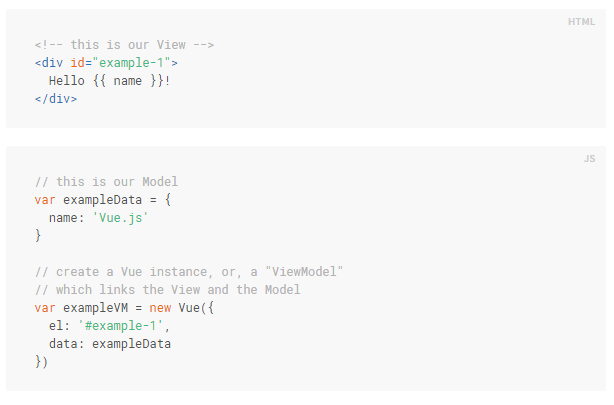
Component System

Component System (Exemplo)
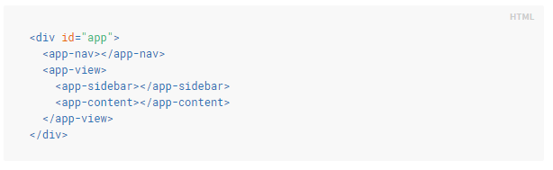
Data Binding Syntax
Interpolations
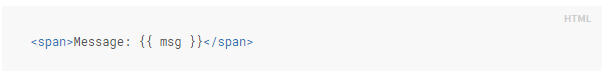
Filters
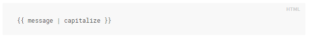
Directives
São atributos especiais com o prefixo v-
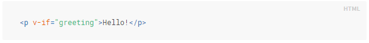
v-if, por exemplo, remove ou insere a tag p baseado no valor da expressão
Directives / Arguments
Algumas diretivas podem receber argumentos
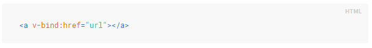
Shorthand: :attr
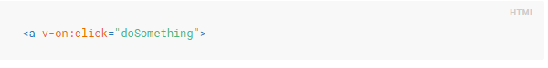
Shorthand: @action
Computed properties
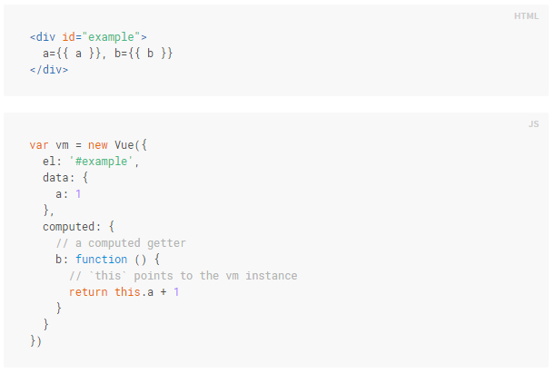
Conditional Rendering
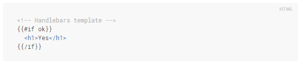
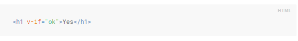
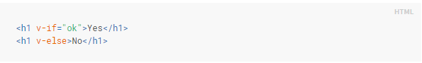
v-show versus v-if
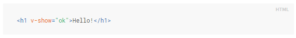
O elemento é compilado e preservado, o v-show simplesmente utiliza uma troca de display, block ou hidden, no CSS.
List Rendering
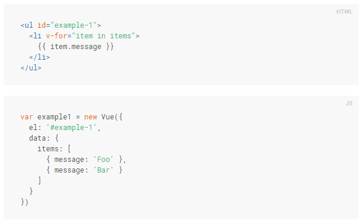
Methods
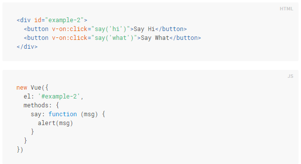
Event Modifiers
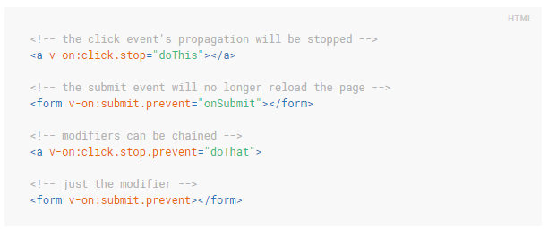
Key Modifiers
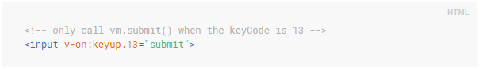
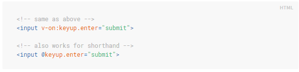
Existem algumas aliases já prontas
enter, tab, delete, esc, space, up, down, left, right
Form input bindings
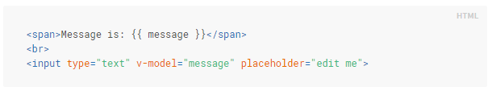
Param Attributes
lazy, number, debounce
Components
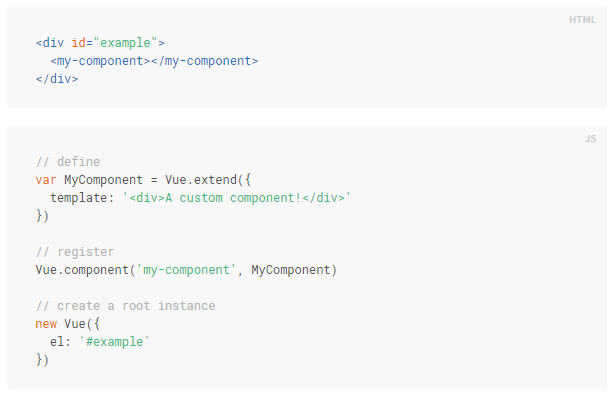
Components / Props
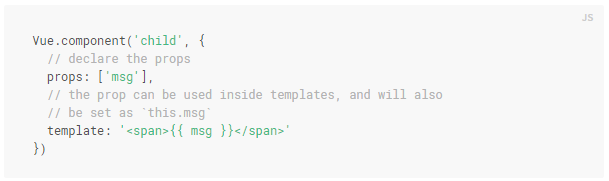
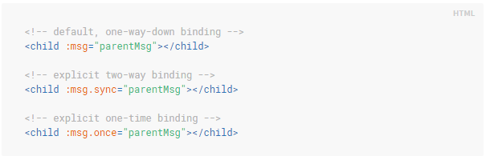
Components / Slot

Custom Directives
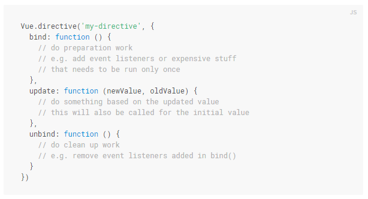
Custom Filters
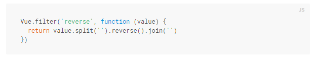
Obrigado!
github.com/wesleyhf